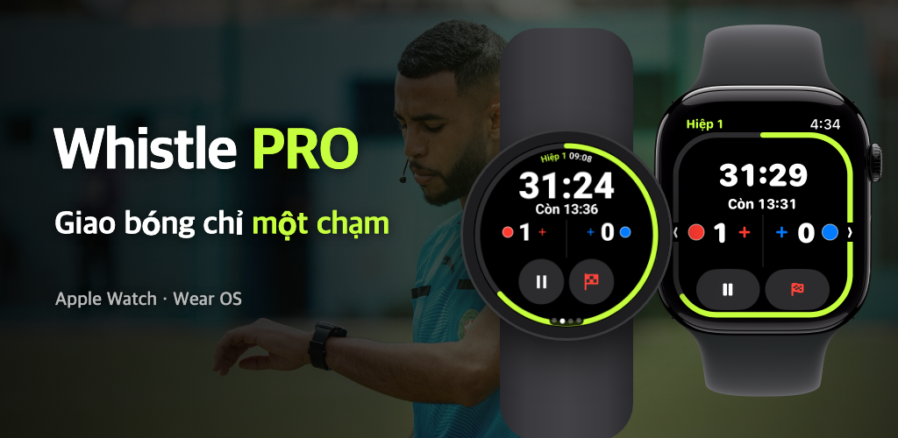

Whistle PRO
Chỉ cần đeo đồng hồ và ra sân.
Bấm giờ và ghi chép trận đấu trên Apple Watch và Wear OS, dành cho trọng tài bóng đá.
Tải về trên App Store
Google Play sắp ra mắt

Chỉ cần đeo đồng hồ và ra sân.
Bấm giờ và ghi chép trận đấu trên Apple Watch và Wear OS, dành cho trọng tài bóng đá.

Bóng đá phong trào, câu lạc bộ, giải trẻ. Cả trận đấu chạy trên một chiếc đồng hồ, không cần điện thoại.
Tạm dừng/tiếp tục, ghi bàn hoặc hoàn tác bằng nút, núm hoặc viền xoay khi đang chạy (PRO). Trên Apple Watch và đồng hồ Wear OS như Galaxy Watch.
Hai hiệp, thi đấu chia quarter, hiệp phụ và luân lưu. Thời gian dừng được tính riêng để gợi ý bù giờ.
Cổ tay rung báo khi sắp hết giờ, khi hết giờ nghỉ giữa hiệp và khi cầu thủ rời sân tạm được quay lại.
Ghi bàn thắng, thẻ vàng, thẻ đỏ và thay người kèm đội và số áo. Thẻ vàng thứ hai tự động thành truất quyền thi đấu.
Bắt đầu từ chuẩn FIFA, đổi thời gian thi đấu, số người, giới hạn thay người và rời sân tạm, rồi lưu thành mẫu trận.
Nhịp tim, quãng đường, nước rút và bản đồ nhiệt di chuyển được lưu cùng biên bản trận và lưu thành bài luyện tập trong ứng dụng Sức khỏe (iPhone) hoặc Health Connect (Android).
Khi trận đấu kết thúc, chia sẻ ngay từ điện thoại biên bản tổng hợp bàn thắng, thẻ phạt, thay người và luật áp dụng.
Trong thẻ [Bản đồ] của chi tiết trận, căn bốn góc sân để xem bản đồ nhiệt di chuyển của bạn trên ảnh vệ tinh.
Với trận đã căn sân, biến chuyển động của bạn thành video phát lại 15 giây và đăng ngay lên mạng xã hội.
Chọn màu áo của hai đội trên đồng hồ trước khi giao bóng, và sửa lại trên điện thoại sau trận.
Những gì cần để điều hành trận đấu đều miễn phí; ghi chép và phân tích có trong PRO.
Không cần đăng ký gói
Theo tháng hoặc theo năm · dùng thử miễn phí 7 ngày
Đăng ký gói trong ứng dụng trên điện thoại và hủy bất cứ lúc nào trong cài đặt tài khoản App Store hoặc Google Play.
Không tài khoản, không máy chủ. Biên bản trận và dữ liệu sức khỏe chỉ đi lại giữa đồng hồ và điện thoại của bạn.
Xem Chính sách quyền riêng tư